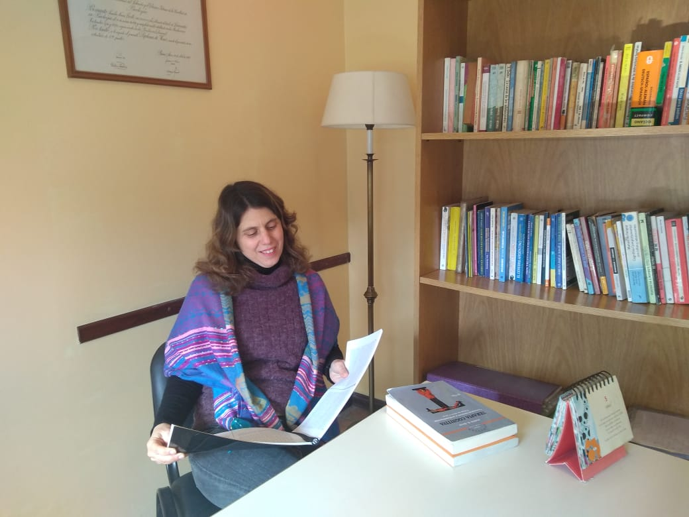

Terapia Online
Atención a niños, adolescentes y adultos

"Cuando la situación es buena disfrútala,
cuando es mala transfórmala.
Cuando no puede ser transformada, transfórmate"
-Viktor Frankl
Te cuento acerca de mi formación profesional y mi experiencia laboral
Egresé hace 25 años de la Facultad de Psicología de la Universidad del Salvador.
Una vez egresada, mi formación fue la orientación psicoanalítica. Realicé la carrera en Psicoanálisis de Niños y Adolescentes en el Colegio de Psicólogos de Quilmes.
Hace unos años, ante los desafíos actuales de la clínica comencé a formarme en Terapia Cognitivo Conductual en la Universidad de Favaloro,
a través del Posgrado y cursos relacionados con el manejo del estrés y la aplicación del Mindfulness.
En cuanto a mi experiencia laboral comencé atendiendo niños, también adolescentes y adultos en consultorio particular.
Realicé la Concurrencia en el Hospital Ramos Mejías, en el sector de Salud Escolar y en el Hospital Borda en el Servicio de Orientación Vocacional y Psicodiagnóstico.
También trabajé en la consultora de Recursos Humanos Codner en Selección de Personal y en el ámbito forense realizando pericias de parte.
Además soy docente de nivel secundario de la materia Psicología.
Si necesitas ayuda, no dudes en consultarme, y voy a estar dispuesta a escucharte.